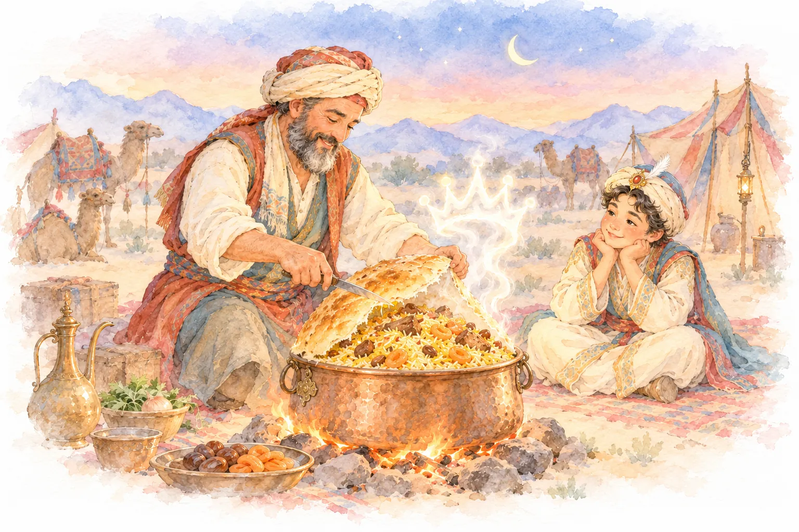

Šacho karūnaThe Shah's crownКорона шаха
Širvano virėjui buvo įsakyta paruošti patiekalą, vertą šacho. Tačiau dvaras keliavo, o virtuvė buvo tik laužas. Virėjas suvyniojo šafraninius ryžius, avieną, kaštonus ir abrikosus į ploną lavašą ir užkasė puodą žarijose. Kai prie stalo jis perpjovė auksinį kupolą, garai pakilo lyg nuo nuimamos karūnos. Šachas paskelbė, kad nuo šiol patiekalas neš jo vardą. Kiekvieną mūsų Şah Plov vis dar atidarome prie stalo – svečiams, kurie vienam vakarui tampa šachais.A cook from Shirvan was ordered to make a dish worthy of the Shah – but the court was on the road and the kitchen was a campfire. He wrapped saffron rice, lamb, chestnuts and apricots in thin lavash and buried the pot in the coals. When he cut the golden dome open at the table, the steam rose like a crown being lifted. The Shah declared that from then on the dish would carry his name. We still open every Şah Plov at the table – for guests who become shahs for an evening.Повару из Ширвана приказали приготовить блюдо, достойное шаха, – но двор был в пути, а кухней служил костёр. Он завернул шафрановый рис, баранину, каштаны и абрикосы в тонкий лаваш и закопал котёл в угли. Когда он разрезал золотой купол у стола, пар поднялся, словно с головы сняли корону. Шах объявил, что отныне блюдо будет носить его имя. Каждый наш Шах-плов мы до сих пор открываем у стола – для гостей, которые на один вечер становятся шахами.
Apie mus ir legenda →About us & our legend →О нас и легенда →